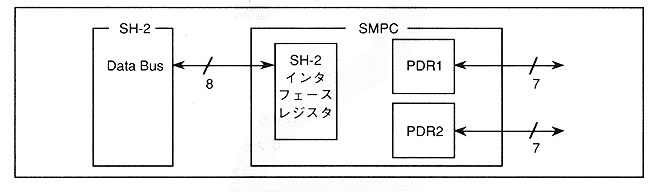

Figure 3.1 shows a block diagram of the SMPC control mode. SMPC control mode is activated by setting a command parameter in IREG of the SH-2 interface register and issuing an INTBACK command. The peripheral data collection result is output to OREG as a result parameter.
Figure 3.1 Block diagram of SMPC control mode
